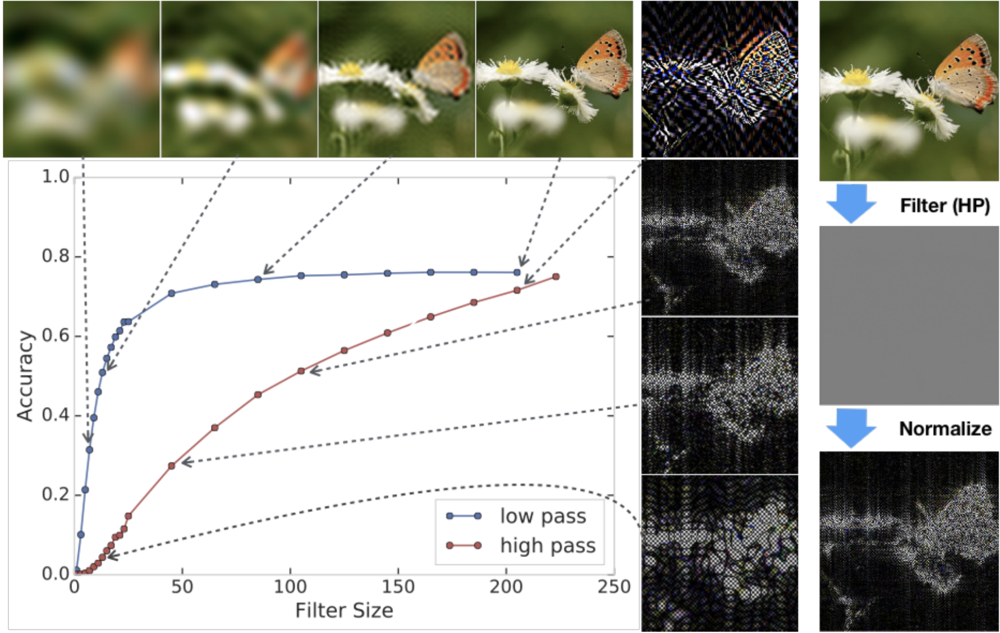
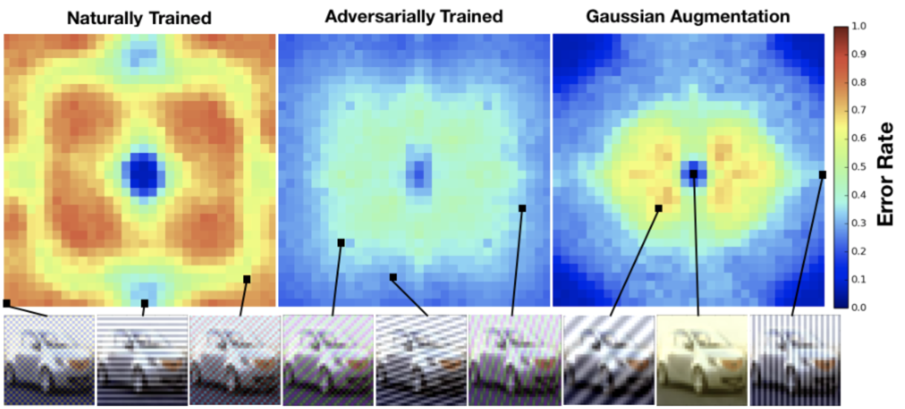

本文是对 Ilyas 等人的论文《对抗样本并非缺陷，而是特征》讨论的一部分。您可以在中了解更多关于关于《对抗样本不是 bug，而是 feature》的讨论的主要讨论内容。
其他评论
Ilyas 等人的评论
Ilyas 等人的假设是一种更一般原则的特例，该原则在分布稳健性文献中已被广泛接受——模型缺乏对分布偏移的稳健性，是因为它们依赖于数据中的表面相关性。当然，同样的原则也能解释对抗样本，因为对抗样本源于对分布偏移的最坏情况分析。为了更全面地理解稳健性，对抗样本研究者应将自己的工作与更一般的分布稳健性问题联系起来，而不是只关注微小的梯度扰动。
详细回应
Ilyas et al. (2019) 的主要假设恰好是分布偏移稳健性文献中公认的一个更一般原则的特例 [[c4,c9,c10,c11,c12]]：模型缺乏稳健性，主要是因为它抓住了数据中的表面统计信息。在图像领域，这些统计信息可能是人类未使用且难以直观理解的，但它们在 i.i.d. 设置下可能对泛化很有用。一些不使用梯度扰动、研究超出对抗扰动之外稳健性的独立实验也得出了类似结果。例如，最近的一项工作 [[c1]] 表明，模型可以通过学习自然存在且不易察觉的高频信息来泛化到测试样本。具体来说，研究者在数据上应用极端高通滤波器后进行模型的训练和测试。得到的高频特征对人类来说完全是灰度的，但模型仅凭这些通常“不可见”的自然特征就能在 ImageNet-1K 上达到 50% 的 top-1 准确率。这些难以察觉的特征可以通过将滤波后的图像归一化至单位方差像素统计量来使其变得明显，如下图所示。

鉴于自然数据中存在大量有用的相关性，我们应该预期模型会学会利用它们。然而，依赖表面统计信息的模型在这些统计信息于部署后被破坏时，可能泛化得很差。为了更全面地理解模型稳健性，[[c1]] 在测试集中对每张图像叠加傅里叶基向量进行扰动后测量了测试误差，如图 2 所示。自然训练的模型对低频扰动具有稳健性，但有趣的是，它在中高频上缺乏稳健性。相比之下，对抗训练提升了对中高频扰动的稳健性，却牺牲了在低频扰动上的性能。例如，对抗训练将低频雾扰动 [[c4]] 下的性能从 85.7% 降至 55.3%。对抗训练同样降低了模型对对比度和低通滤波噪声的稳健性。通过采用超出微小 \ell_p 范数扰动之外的更广阔稳健性视角，我们发现对抗训练的模型其实并不“稳健”。它们只是偏向于不同类型的表面统计信息。因此，对抗训练可能会牺牲真实世界场景下的稳健性。

那么，既然对抗训练可能损害对分布偏移的稳健性，研究界该如何构建能在现实世界中稳健泛化的模型呢？要做到这一点，研究界必须采用更广阔的稳健性视角，并接受 \ell_p 对抗稳健性是高度受限的，且在很大程度上与安全性和真实世界的稳健性脱节 [[c13]]。虽然对抗样本常被认为是深度神经网络分类器特有的奇怪现象，但它们并非困扰着原本超人级分类器的反直觉谜题。相反，对抗样本其实是缺乏噪声稳健性的模型的预期结果 [[c2,c3]]。鉴于在大量合成——甚至自然 [[c15]] ——条件下的脆弱表现，这并不令人惊讶。当模型在与训练分布略有不同的分布上评估时，总是会表现出较差的性能。尽管如此，当前的基准测试并未揭示这些失败模式。结论是我们需要设计更具挑战性和多样性的测试集，不应继续仅仅专注于研究特定的梯度扰动。随着稳健性研究的推进，我们应关注模型脆弱的各种方式，并据此设计更全面的基准 [[c4,c5,c6,c7,c8,c14,c15]]。只要模型缺乏对分布偏移的稳健性，就总能找到可被对抗利用的错误。
要引用 Ilyas 等人的回应，请引用他们的
回应合集
回应总结：模型从数据高频成分中学习的演示很有趣，且与我们的发现很好地吻合。尽管对噪声的敏感性确实可能源于非稳健但有用的特征，但机器学习模型的这种脆弱性（类似于对抗样本）迄今主要被视为模型“缺陷”的结果，并认为会被“更好”的模型消除。最后，我们同意模型需要对更广泛的扰动具有稳健性——扩展相关扰动的集合将有助于发现更多非稳健特征，并进一步提炼我们真正希望模型依赖的有用特征。
回应：模型能够纯靠训练集的高频成分就能正确分类，这一事实很巧妙！这很好地补充了我们的一个结论：即使某些特征对人类来说难以理解，模型仍会依赖这些有用的特征。
此外，虽然对噪声的非稳健性可以表明模型正在使用非稳健但有用的特征，但这并非该现象过去主要被看待的方式。更多情况下，机器学习模型对噪声的脆弱性被视为模型固有的不足，例如由于边界较差。（这种观点在对抗稳健性研究社区中更为普遍。）因此，人们通常预期朝着“更好”/“无缺陷”模型的进展会让它们对噪声和对抗样本更稳健。
最后，我们完全同意 L_p 有界扰动只是我们希望模型对其稳健的扰动集合中非常小的一个子集。不过，我们工作的重点是人类对齐——为此，我们证明了模型依赖于对人类不可察觉的模式敏感的特征。因此，其他难以理解但有用的特征族的存在，将为我们的论点提供更多支持——识别和刻画这类特征是一个有趣的未来研究方向。
您可以在
主要讨论文章 中找到更多回应。